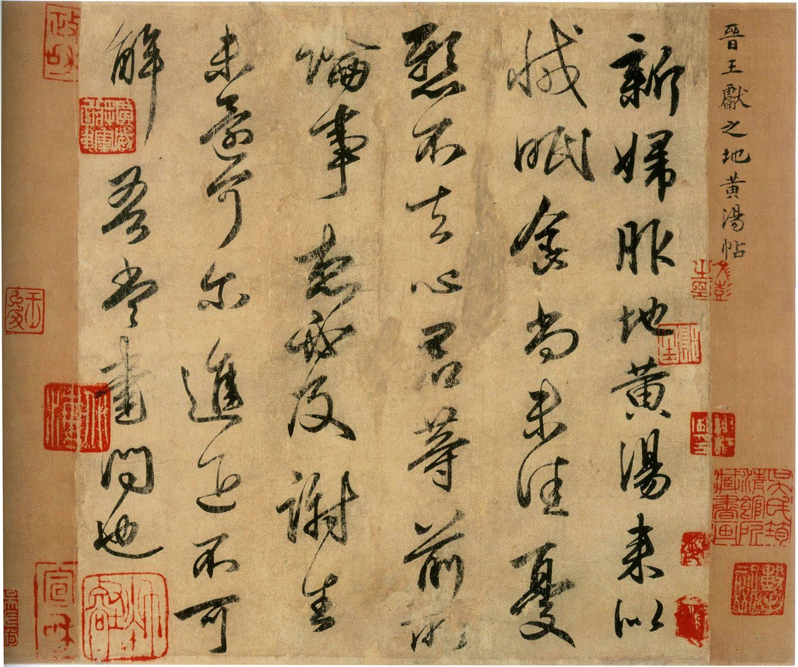

'문화의 뿌리, 끊임없이 이어진다'… 中 무형문화유산 계승 조명
중국이 전통 문화의 뿌리를 잇는 무형문화유산의 계승을 조명하고 있다. 옛 기예를 현대에 되살리는 노력이 문화 정책의 한 흐름으로 자리 잡았다.
강패산 기자 · 2026.06.19
橋중국·문화

환구망은 '문화의 뿌리가 끊임없이 이어진다'는 주제로 중국의 무형문화유산 계승을 조명했다. 전통 공예·기예가 현대의 삶 속에서 새롭게 활용되는 사례들이 소개됐다.
광고 문의 · 300×250무형문화유산은 공예·음악·의례·세시풍속처럼 형체가 없는 문화 자산을 말한다. 계승자가 줄어드는 종목이 많아, 기록·교육·산업화를 통한 보존이 과제로 꼽힌다.
전통문화를 현대적으로 되살리면 관광·디자인·콘텐츠 산업과 결합해 새로운 부가가치를 만든다. 문화유산이 박물관에 머무르지 않고 일상으로 들어오는 흐름이다.
華橋時報는 화인 공통의 문화 자산에 주목한다. 명절·전통 공예·세시풍속은 세계 화인을 잇는 끈이므로, 문화유산의 계승은 본지가 꾸준히 전하는 주제다.
출처·참고 (사실 확인용 — 본문은 직접 재작성)
· 환구망
· 환구망